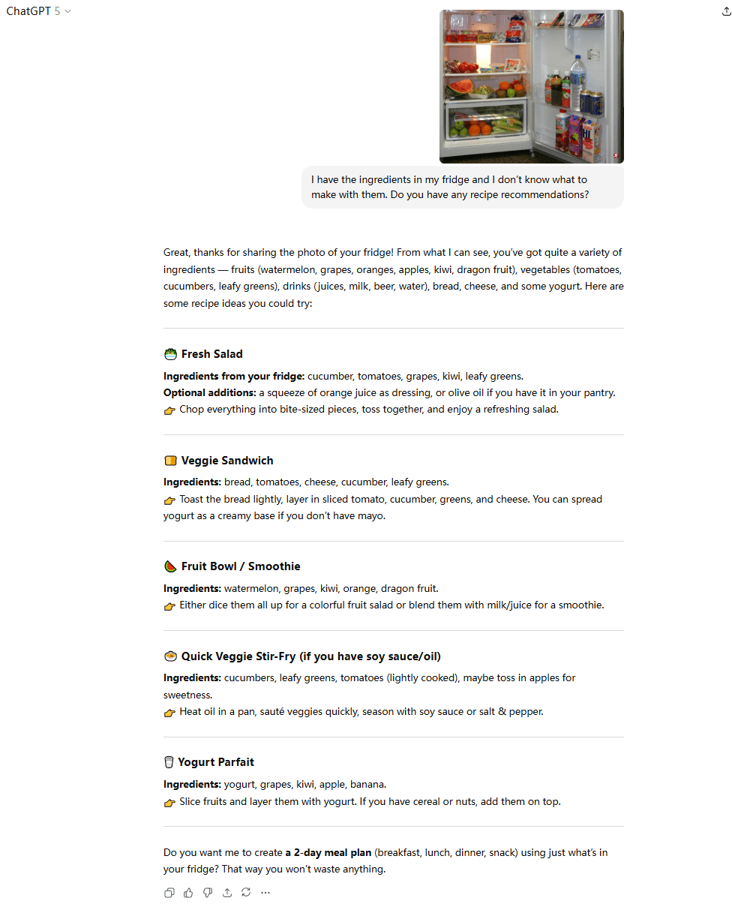
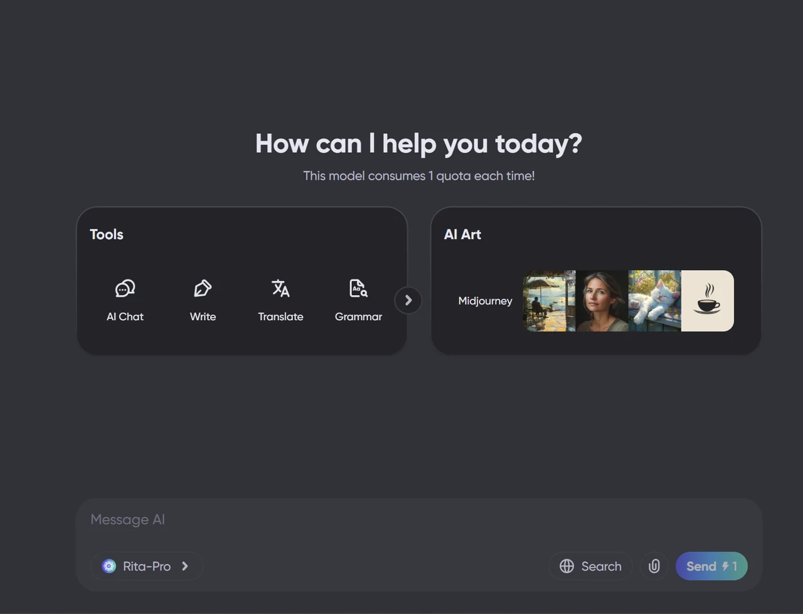

2025 年最佳 AI 聊天机器人：哪款 AI 助手真正适合你？

数据显示，目前全球已有超过9.87亿人正在使用AI聊天机器人。在这个AI飞速发展、差异化模型层出不穷的时代，选择合适的聊天机器人已经成为了一件令人头疼的事情。
朋友们经常问我："我应该选择 ChatGPT Plus 还是 Claude Pro？如果我只需要内容写作和研究方面的帮助，还有其他更好的选择吗？" 每个人都害怕浪费钱、选错工具，或者为无法有效使用的东西付费。
作为一名经常亲身测试各种人工智能工具的博主，我完全理解这一点。因此，我决定撰写这篇文章，清晰地解释2025年最值得关注的聊天机器人：哪些最适合学生，哪些最适合内容创作者。
我希望这篇文章能帮助你根据你的特定需求做出正确的选择。
2025 年最佳 AI 聊天机器人：满足各种需求的 7 大精选
ChatGPT——最佳整体人工智能聊天机器人
Perplexity——最可靠的研究和信息人工智能
Claude——最佳长篇内容摘要人工智能
DeepSeek——最像人类的对话式人工智能
Grok——最有趣的个性人工智能聊天机器人
Gemini——最佳学术和学习支持人工智能
Rita——最便捷的一体化AI助手
为什么选择这七个人工智能聊天机器人？
我测试过无数的人工智能聊天机器人，并将它们广泛应用于工作和内容创作。如果要我挑选几个真正具有代表性价值和实用价值的聊天机器人，以下七个绝对是佼佼者。我的理由很简单：
这七个人工智能聊天机器人就像一群多元化的朋友，每个机器人都有独特的个性和优势，可以满足你的各种需求。
接下来，我将根据真实的用户体验来介绍每一个，涵盖它们的功能、目标用户、定价和定位。
ChatGPT
ChatGPT 仍然是目前功能最齐全的 AI 聊天工具。它可以与你一起集思广益、调试代码、解释学术概念，甚至提供日常事务的建议。
| ChatGPT 优点 | ChatGPT 缺点 |
|---|---|
| + 多模式支持 + 强有力的推理 + 丰富的生态系统 |
- 容易产生幻觉，需要核实事实 - 安全限制限制功能 |
为什么选择 ChatGPT
正如它的界面所示，你可以"问任何问题"。无论是头脑风暴、调试问题，还是学术问题，它都能提供结构化的答案。我喜欢用它来分享我零散的想法，因为它能给我带来更多灵感。
GPT-5于 2025 年 8 月发布，带来重大升级。它在多模态推理、代码生成、检索和专业应用方面处于领先地位。在MedXpertQA医学基准测试中，GPT-5 的理解能力比竞争对手高出
其他主要功能和订阅计划
AI 模型： GPT-5（Plus）、GPT-5-Thinking（Pro）、GPT-4o（免费）语音功能： 5 个 AI 语音角色，支持实时对话和打断文件处理： 支持PDF、DOCX、代码文件上传和分析安全功能： 企业级安全性，包括 SSO（单点登录）和 MFA（多因素身份验证）- ChatGPT 价格
： 免费；Plus 每月 20 美元；Pro 每月 200 美元；Business 每月 25 美元；企业定制价格 预算订阅： 环球巴士 ChatGPT Plus 镜像账户 28.88 元/月（镜像基础版，全模型6小时/30次）
Perplexity
Perplexity 是一款"答案引擎"，它将大型语言模型 (LLM) 与实时网络搜索相结合，提供简洁的答案和可点击的来源。它支持多轮后续提问和更深入的研究模式，非常适合快速核实事实、学习和研究。
| Perplexity 的优点 | Perplexity 缺点 |
|---|---|
| + 实时信息更新 + 透明引用 + 强大的事实核查能力 |
- 界面可能很复杂 - 对话体验不太自然 |
为什么选择 Perplexity
Perplexity 最大的优势在于
它支持 GPT-5、Claude 4 Sonnet、Gemini 2.5 Pro 以及自带的 Sonar 模型。你可以根据自己的喜好进行切换。
在测试中，Perplexity 在 Humanity 的 Last Exam 基准测试中达到了 21.1% 的准确率，超越了其他主流模型。如果你需要快速核实事实并获取可靠的信息来源，Perplexity 是一个可靠的选择。
其他主要功能和订阅计划
AI 模型： GPT-5、Claude、Gemini 2.5 Pro 和 Sonar — 可根据需要切换空间协作： 用于组织项目的共享团队知识空间Comet Assistant： 浏览器侧边栏，用于网页摘要、查询和日历/电子邮件管理Perplexity Labs： 新功能测试场地Perplexity 价格： 免费；专业版 20 美元/月
Claude
如果说 ChatGPT 像一位多才多艺的老师，那么 Claude 则更像一位博览群书的学者。面对堆积如山的长篇文档，它能够安静高效地处理，并以清晰简洁的语言提炼出关键点。随着
| Claude 优点 | Claude 缺点 |
|---|---|
| + 强大的编码能力 + 大规模上下文窗口 + 安全可靠 |
- 创意表现一般 - 偶尔提供过时或不正确的回复 |
为什么选择Claude
Claude 是 Anthropic 为创作、编程和智能代理构建的一套"思维"模型。其核心功能包括混合推理、Artifacts 工作区和计算机使用。值得注意的是，在OSWorld（一项在真实计算机任务上测试 AI 模型的基准测试）中
Claude 的突出优势在于其
我最喜欢的功能是
其他主要功能和订阅计划
AI 模型： Sonnet 4.5、Opus 4.1、Haiku 3.5 等记忆功能： 通过手动管理长期记忆偏好和背景安全功能： 企业级 SSO 和多因素身份验证项目协作： 与 Google Workspace（Gmail/日历/文档）集成定价： 免费；专业版 20 美元/月（月费）或 17 美元/月（年费）；最高 100 美元/月预算选项： 环球巴士 提供 Claude Pro账户，每月 198.88 元
DeepSeek
DeepSeek 由中国 DeepSeek AI 团队开发，并由量化交易公司 High-Flyer 提供支持。作为最年轻的 AI 模型之一，它将人类的温暖与自然的情感表达融为一体，同时为学习、编程和研究提供强大的推理和逻辑能力。
| DeepSeek 的优点 | DeepSeek 缺点 |
|---|---|
| + 开源灵活性 + 更自然的表达 + 强大的数学和逻辑能力 + 完全免费 |
- 知识更新滞后 - 偶尔显示服务器繁忙消息 |
为什么选择 DeepSeek
DeepSeek 提供两种核心模型：
deepseek-chat（V3.1-Terminus）： 一般对话和内容创建deepseek-reasoner（R1系列）： 复杂逻辑和深度推理
它支持
与 DeepSeek 聊天感觉很自然——你会忘记它是人工智能。与重复提问的机械模型不同，它会随着你的情绪而流动，甚至会
除了类似人类的对话之外，它还能出色地处理逻辑和推理。DeepSeek 支持
它的
其他主要功能和订阅计划
模型选项： 聊天（对话/创作）/推理器（复杂推理）上下文： 聊天 128K，推理器默认 32K，最大 64K输出容量： 聊天限制为 8K，Reasoner 支持更长的输出特点： Chat支持JSON输出、函数调用、代码补全；Reasoner只专注于思考价格： 免费
Grok
如果你经常在 X 上追踪新闻线索、寻找报道灵感或关注热门话题，Grok 是最便捷的工具。它与 X 原生集成，可直接访问最新推文、热门列表和用户讨论。
为什么选择 Grok
它的
对于账户管理，你需要
其他主要功能和订阅计划
模型： Grok 4 （推理，256K）/Grok 4 Fast （推理和非推理，2M 窗口）/ 旧版Grok 3 / 3 Mini （131K ）馆藏文档搜索： 在已上传或保存的文档集中进行精确检索多模式/生成： 用于创意和社交媒体内容的图像/视频生成（Grok Imagine） 定价： Premium每年 7 美元/月 / 8 美元/月 预算选项： 环球巴士 专属充值，每月168.88 元
Gemini
如果你把AI比作朋友，那么Gemini就像那个平时不怎么一起玩，但每当考试或论文截止日期来临时，总能化险为夷的同学。在
| Gemini的优点 | Gemini的缺点 |
|---|---|
| + 卓越的学术和专业分析能力 + 无缝集成 Google 生态系统 + 清晰、结构良好的回复 |
- 语气趋于正式 - 网络搜索/连接的 API 限制 |
为什么选择Gemini
Gemini 是 Google/DeepMind 推出的多模态 AI 模型系列，涵盖聊天、创作、代理、推理和搜索等功能。目前活跃的版本包括 Flash / Flash-Lite / Pro / Deep Think（推理模式）等。
Gemini 最大的独特优势在于它与 Google 工具的集成。你只需点击一下，即可在 Gmail 中自动生成电子邮件回复、在 Docs 中重写文档，并在 Slides 中创建演示文稿，无需切换平台。对于经常处理学习、研究和工作内容的人来说，这提供了最省时高效的体验。
在我与Gemini的互动中，它展现了
其他主要功能和订阅计划
深度研究： 复杂问题经过多轮思考和信息整合，以获得更有条理的结果多模式创作： 上传 PDF、图像、音频供 Gemini 分析或总结Google Workspace 集成： 无需复制粘贴，即可直接在 Gmail、文档、云端硬盘中使用Gemini 定价： Google AI Pro 每月 19.99 美元；Google AI Ultra 每月 249.99 美元环球巴士 定价： 每月 198.88 元
Rita（GamsGo AI）
在这七个小伙伴中，Rita或许是
| Rita 优点 |
|---|
| + 响应速度快 + 一站式多模型集成 + 轻量级/本地化 + 价格实惠 |
为什么选择Rita
Rita 支持几乎所有当前主流模型，集成了市面上
功能上，Rita助手内置写作辅助、邮件回复、语法检查、提示生成等模块，方便用户快速完成各种内容创作任务。
为了保障数据安全，该平台采用"账户托管+隐私保护"的方案：用户通过GamsGo的界面访问服务，无需直接操作账户密码。该平台声称提供PCI-DSS级别的支付安全保障和严格的风险控制。
其他主要功能和订阅计划
集成功能： 文本生成、代码生成、图像生成数据安全： PCI-DSS级别支付安全，严格风险控制- Rita 定价
： Mega 10.99 美元/月；Pro 5.99 美元/月
如何选择最适合你的 AI 聊天机器人？
经过所有这些讨论，你可能会想：
答案取决于你是哪种类型的用户，以及你主要使用 AI 做什么。关键不在于盲目追求"最新、最强"，而是找到最适合你需求和预算的方案。
我的经验表明：
- 1.
明确你的需求： 学习、工作、还是日常应用？ - 2.
从免费版本开始： 付费前了解你的习惯 - 3.
提出精确的问题： 这比比较工具更重要 - 4.
保持理性： 人工智能并非无所不能 - 5.
注意隐私： 谨慎处理敏感信息
那么具体该如何选择呢？根据我的实际经验，以下是一些基于场景的建议：
学生/学术研究人员 → Claude（长篇文档摘要）、Gemini（学术问答）专业人士/内容创作者 → ChatGPT（多功能）、Perplexity（研究强国）寻求陪伴 / 日常聊天 → DeepSeek（最像人类）、Grok（最有趣）价值导向/想尝试 → Rita（一站式体验，多模式切换）
摘要：哪种人工智能聊天机器人适合你？
没有"完美"的 AI 聊天机器人，只有符合你特定需求和工作流程的聊天机器人。无论你是需要长文档分析的学生（Claude）、需要多功能辅助的专业人士（ChatGPT）、寻找可靠资源的研究人员（Perplexity），还是想要自然对话的普通人（DeepSeek），每种工具都能在不同场景下展现出各自的优势。
合适的AI聊天机器人能够持续解决你的问题，且不会超出你的预算。确定你的主要用例，然后进行相应的选择。
常问问题
有没有比 ChatGPT 更好的聊天机器人？
"更好"取决于你的需求。如果你想要同理心，DeepSeek 最有人情味；如果你想要幽默，Grok 能让你开怀大笑；Claude 在处理长篇文档方面更是无可匹敌。但对于一个全能型的朋友来说，ChatGPT 仍然是最全能的。
我如何选择合适的人工智能聊天机器人？
想想你的主要用途：学习、工作还是陪伴。程序员可能喜欢 Claude 或 Gemini，作家可能喜欢 ChatGPT，研究人员可能信赖 Perplexity，而 DeepSeek 和 Grok 则擅长休闲聊天。Rita 是经济实惠的一站式选择。
值得为人工智能聊天机器人付费吗？
如果你经常使用，答案是肯定的。付费套餐提供更大的内存、更快的速度和更高级的工具。而且你无需花费太多 —— 在 环球巴士，你可以以官方价格的一小部分获得共享账户，并享受相同的专业功能。